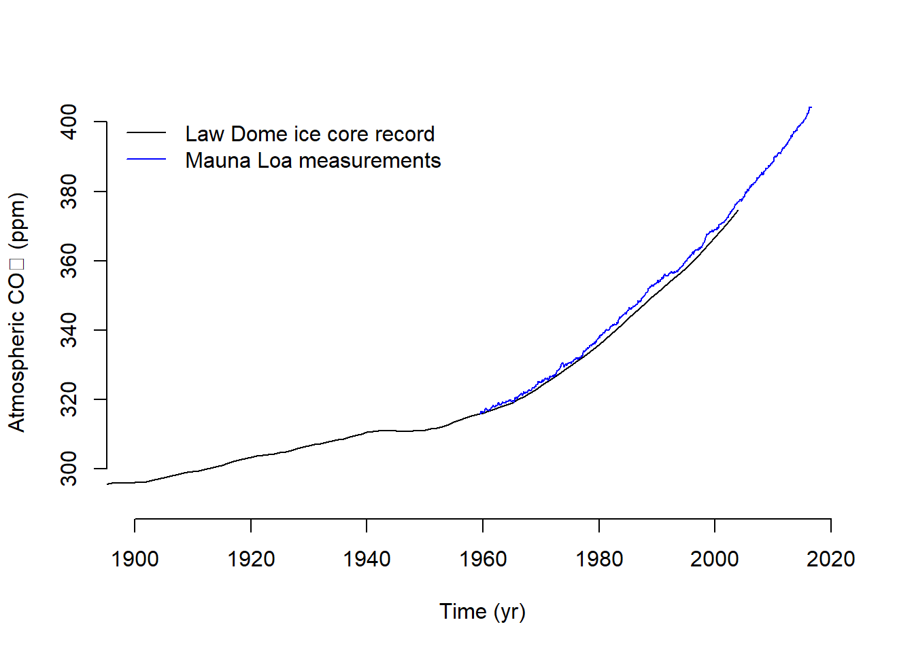
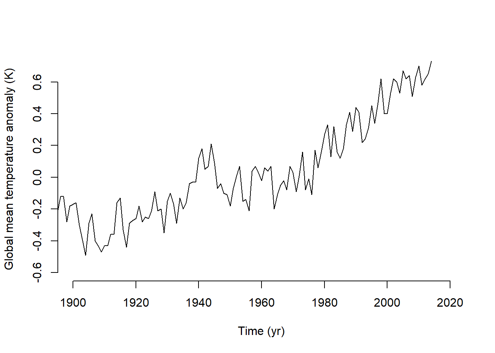
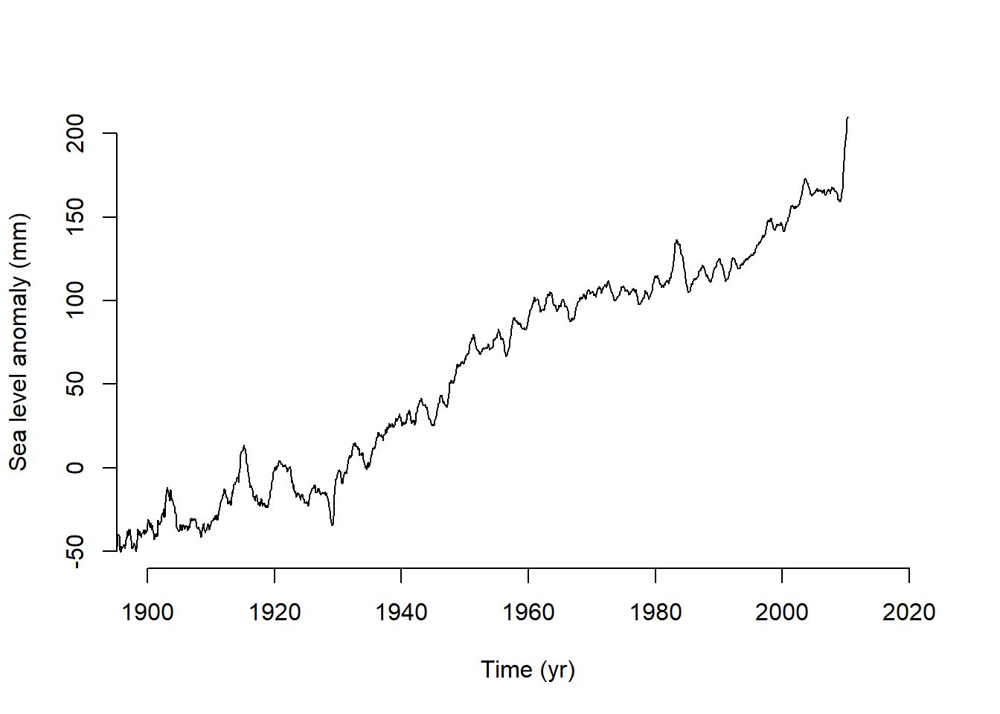
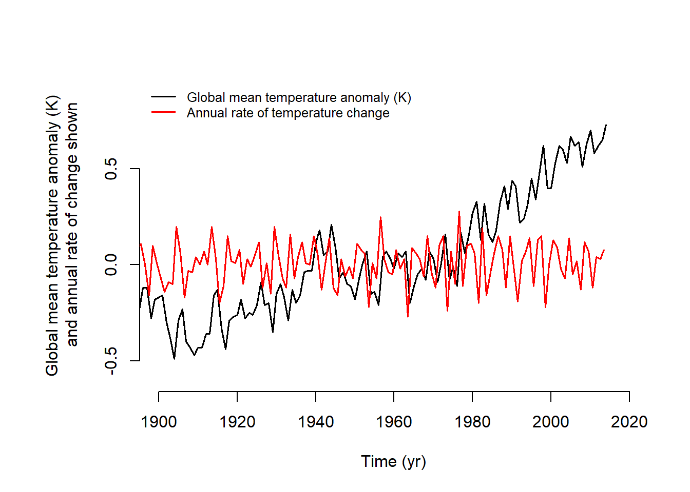
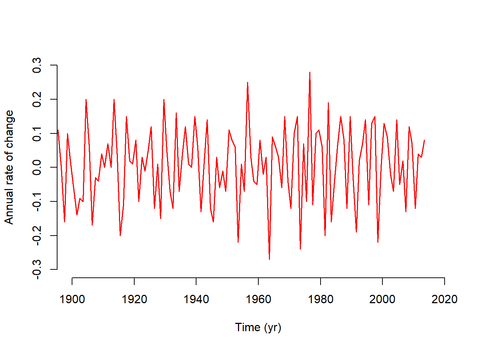

# Check if libraries are installed; install if not.
if (!require("pacman")) install.packages("pacman")
pacman::p_load(here, lubridate, ggplot2, pingr)Exercise 2
Sea level anomaly data
# Create a folder for storing downloaded files
if (!file.exists(here("assignment3/data"))) {
dir.create(here("assignment3/data"))
}
# Download and read in the sea level anomaly data from Jevrejeva et al. (2014)
if (!file.exists(here("assignment3/data/jevrejeva2014_gmsl.txt"))) {
download.file(
"https://psmsl.org/products/reconstructions/gslGPChange2014.txt",
here("assignment3/data/jevrejeva2014_gmsl.txt")
)
}
# Read in and ignore lines with comments (starting with %)
sl.data <- read.table(here("assignment3/data/jevrejeva2014_gmsl.txt"),
comment = "%")
# Assign column names
colnames(sl.data) <-
c("time", "rate_mm", "rate_err_mm", "gmsl_mm", "gmsl_err_mm")
# Format date
sl.data$date_decimal <- lubridate::date_decimal(sl.data$time)# Conditionally download files used in lab1_sample.R
if (!file.exists(here("assignment3/data/co2_mm_mlo.txt"))) {
download.file(
"ftp://aftp.cmdl.noaa.gov/products/trends/co2/co2_mm_mlo.txt",
here("assignment3/data/co2_mm_mlo.txt")
)
}
if (!file.exists(here("assignment3/data/law2006.txt"))) {
download.file(
"ftp://ftp.ncdc.noaa.gov/pub/data/paleo/icecore/antarctica/law/law2006.txt",
here("assignment3/data/law2006.txt")
)
}
if (!file.exists(here("assignment3/data/GLB.Ts+dSST.txt"))) {
download.file(
"http://data.giss.nasa.gov/gistemp/tabledata_v3/GLB.Ts+dSST.txt",
here("assignment3/data/GLB.Ts+dSST.txt")
)
}
# Read in the CO2 data
loa.co2.data <- read.table(here("assignment3/data/co2_mm_mlo.txt"),
skip = 57, header = FALSE)
law.co2.data <- read.table(here("assignment3/data/law2006.txt"),
skip = 183, nrows = 2004,
header = FALSE)
# Read in the GISS temperature data
begin.rows <- c(9, 31, 53, 75, 97, 119, 141)
num.rows <- c(19, 20, 20, 20, 20, 20, 14)
temp.data <- matrix(NA, nrow = sum(num.rows), ncol = 20)
temp.data[1: num.rows[1], ] <- as.matrix(
read.table("data/GLB.Ts+dSST.txt", skip = begin.rows[1],
nrows = num.rows[1], header = FALSE)
)
for (i in 2: length(begin.rows)) {
temp.data[(sum(num.rows[1: i- 1])+ 1): sum(num.rows[1: i]), ] <-
as.matrix(read.table("data/GLB.Ts+dSST.txt", skip = begin.rows[i],
nrows = num.rows[i], header = FALSE))
}# Create a folder to store figues as pdfs
if (!file.exists(here("assignment3/figures"))) {
dir.create(here("assignment3/figures"))
}
# Plot
pdf(here("assignment3/figures/lab1_sample_plot2.pdf"),
width = 4.5, height = 6)
par(mfrow = c(3, 1), cex = 0.66)
plot(law.co2.data[, 1], law.co2.data[, 6], type = "l", xlim = c(1900, 2020),
ylim = c(290, 400), bty = "n", xlab = "Time (yr)",
ylab = "Atmospheric carbon dioxide (ppm)")
lines(loa.co2.data[, 3], loa.co2.data[, 5], type = "l", col = "blue")
legend("topleft", c("Law Dome ice core record", "Mauna Loa measurements"),
col = c("black", "blue"), lwd = 1, bty = "n")
plot(temp.data[, 1], temp.data[, 14]/ 100, type = "l", xlim = c(1900, 2020),
ylim = c(-0.6, 0.7), bty = "n", xlab = "Time (yr)",
ylab = "Global mean temperature anomaly (K)")
plot(sl.data$time, sl.data$gmsl_mm , type = "l", xlim = c(1900, 2020),
ylim = c(-50, 200), bty = "l", xlab = "Time (yr)",
ylab = "Sea level anomoly (mm)")
# Close the device and make the return value invisible
invisible(dev.off())# Re run code to print in Quarto html and pdf
# CO2
plot(law.co2.data[, 1], law.co2.data[, 6],
type = "l", xlim = c(1900, 2020), ylim = c(290, 400),
bty = "n", xlab = "Time (yr)", ylab = "Atmospheric CO\u2082 (ppm)")
lines(loa.co2.data[, 3], loa.co2.data[, 5], type = "l", col = "blue")
legend("topleft",
c("Law Dome ice core record", "Mauna Loa measurements"),
col = c("black", "blue"), lwd = 1, bty = "n")
# Temperature anomaly
plot(temp.data[, 1], temp.data[, 14] / 100,
type = "l", xlim = c(1900, 2020), ylim = c(-0.6, 0.7),
bty = "n", xlab = "Time (yr)",
ylab = "Global mean temperature anomaly (K)")
# Sea level anomaly
plot(sl.data$time, sl.data$gmsl_mm,
type = "l", xlim = c(1900, 2020), ylim = c(-50, 200),
bty = "n", xlab = "Time (yr)",
ylab = "Sea level anomaly (mm)")



Question 1
By how much have atmospheric carbon dioxide concentrations, global mean temperatures, and sea levels changed between 1900 and the early part of the present century?
Rates of temperature change
# Rate of change
dT_dt_1 <- diff(temp.data[, 14])/100 / diff(temp.data[, 1])
midpoint_t <- temp.data[-length(temp.data[, 1]), 1] + .5
# GISS records sometimes use 100 to represent the average temperature
par(mar = c(5, 7, 4, 2) + 0.1)
plot(temp.data[, 1], temp.data[, 14] / 100, type = "l", xlim = c(1900, 2020),
ylim = c(-0.6, 0.9), bty = "n", xlab = "Time (yr)",
ylab = "Global mean temperature anomaly (K)
and annual rate of change shown", lwd = 1.5)
lines(midpoint_t, dT_dt_1, type = "l", col = "red", lwd = 1.5)
# Add a legend
legend("topleft",
legend = c("Global mean temperature anomaly (K)",
"Annual rate of temperature change"),
lwd = 1.5, col = c("black", "red"), lty = 1, bty = "n", cex = 0.8)
# Second y-axis for the rate
# plot(temp.data[, 1], temp.data[, 14] / 100,
# type = "l", xlim = c(1900, 2020),
# ylim = c(-0.6, 0.7), bty = "n", xlab = "Time (yr)",
# ylab = "Global mean temperature anomaly (K)", lwd = 1.5)
# par(new = TRUE) # Prepare for second axis
# plot(midpoint_t, dT_dt_1, type = "l",
# xlim = c(1900, 2020), ylim = c(-0.5, 0.5),
# col = "red", xaxt = "n", yaxt = "n", xlab = "", ylab = "", , lwd = 1.5)
# axis(side = 4, col = "red", col.axis = "red")
# mtext("Annual rate of change", side = 4, line = 3, col = "red")

plot(temp.data[, 1], temp.data[, 14] / 100, type = "l", xlim = c(1900, 2020),
ylim = c(-0.6, 0.7), bty = "n", xlab = "Time (yr)",
ylab = "Global mean temperature anomaly (K)", lwd = 1.5)
plot(midpoint_t, dT_dt_1, type = "l", col = "red", lwd = 1.5,
xlim = c(1900, 2020),, ylim = c(-0.3, 0.3), bty = "n",
xlab = "Time (yr)", ylab = "Annual rate of change")
